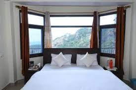
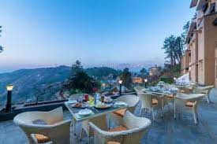

Wildflower Hall, An Oberoi Resort
Located amidst pine and cedar forests, this luxurious resort offers breathtaking views of the Himalayas. It's known for its elegant rooms, fine dining options, and excellent service.
₹799 per night

The Oberoi Cecil
nother luxury option, The Oberoi Cecil is a heritage hotel that exudes old-world charm. Situated in the heart of Shimla, it offers well-appointed rooms, fine dining, and amenities like a spa and fitness center.
₹899 per night

Radisson Hotel Shimla
This contemporary hotel offers comfortable rooms with modern amenities. It's located near the city center and provides easy access to Shimla's attractions. Guests can enjoy facilities like a fitness center, spa, and on-site dining options.
₹999 per night